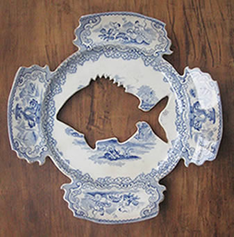

WHAT'S ON
Portage Ceramic Awards 2014
Te Uru Waitakere Contemporary Gallery and The Trusts Community Foundation are delighted to present the Portage Ceramic Awards 2014. This annual award provides a vital platform to showcase the diversity of contemporary ceramic artists nationwide.